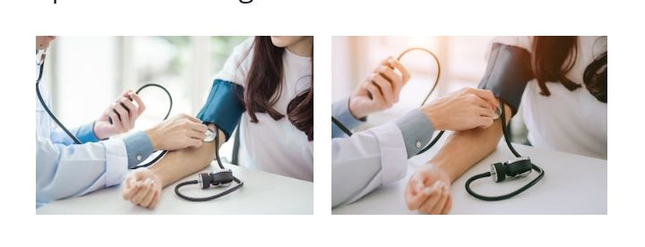

Welcome to Ann Specialist Hospital
House 4,Zone 2 Lajomo estate,olude community
osogbo,osunstate.


OUR VISION
Every year more than a millon people come to Ann specialist
for care.our highly specilaized experts are deeply experienced in treating rare and complex conditions.
getting effective treatment depends on identifying the right problem.In a recent study,88 percent of patients who
came to ann specialist hospital were able to recieve their complete treatment and wholeness of quick recovery happens
with the testimony from their mouth,it is certain that we are extraordinary with the help of God